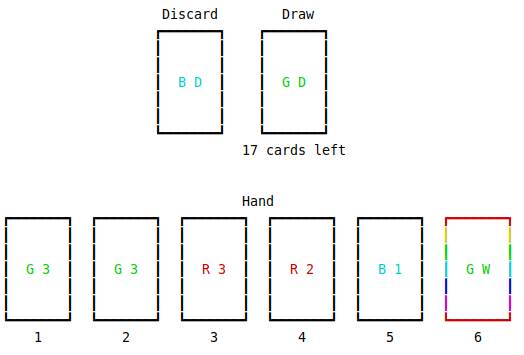
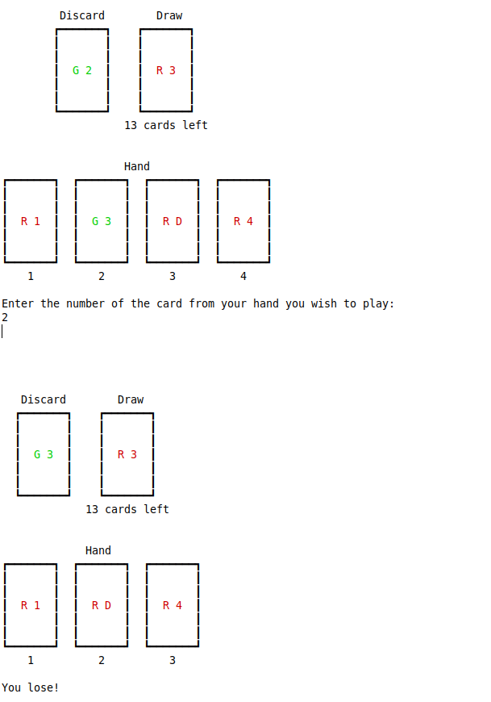
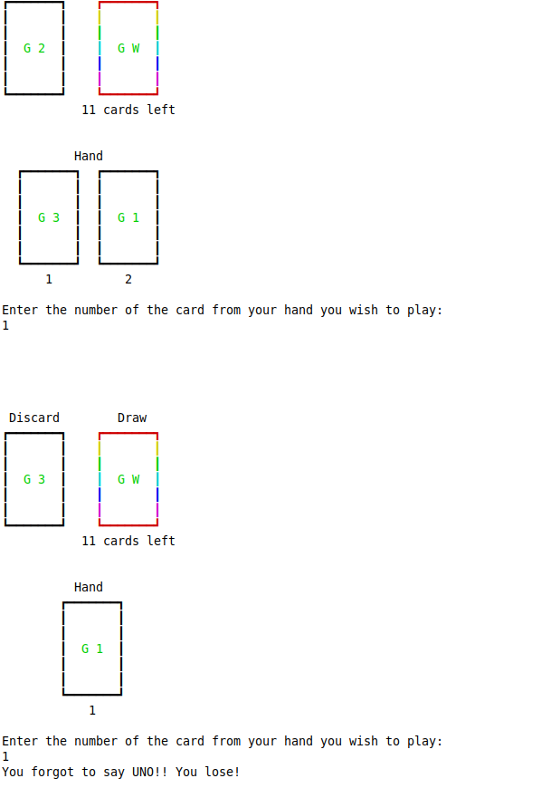
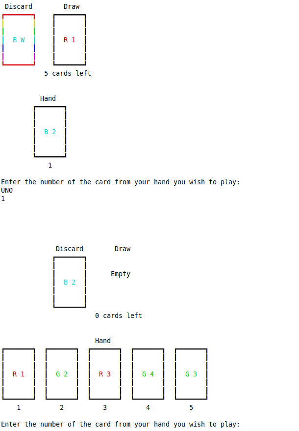
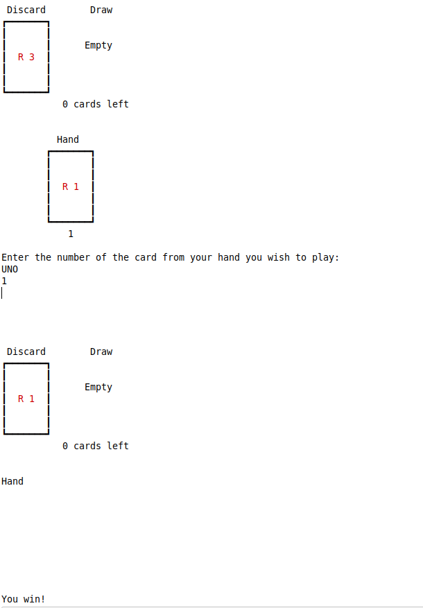

UNO is a card game in which players take turns playing cards from their hand onto to the top of a stack called the discard pile, and sometimes drawing cards from the top of a different stack called the draw pile. In this assignment, you will be building a simplified version of UNO that can be played by a single player.
Here's a visual representation of the three elements of Single Player UNO - the discard pile, the draw pile, and the hand:
Each card in single player UNO has a color (Red, Blue, or Green) and a value (1, 2, 3, 4, Draw, or Wild). The color and value of a card are represented by a single character. In the visual above, we can see the card at the top of the discard pile is a Green Draw, the first card in the players hand is a Green 3, the second card in the players hand is also a Green 3, and the third card in the players hand is a Red 3. The significance of the card colors and values is explained in the Playing Cards and Drawing Cards sections.
In Single Player UNO, the player wins by playing all the cards in the game onto the discard pile, or in other words, by playing the last card in their hand after drawing all the cards from the draw pile. The player loses if they cannot play any of the cards in their hand, or if they forget to type the word "UNO" before playing the last card in their hand. Note that even if cards remain in the draw pile, and therefore the player would not win by playing the last card in their hand, they still must type UNO before playing this card.
Each turn, the player selects a single card from their hand to play onto the discard pile by entering a number corresponding to the card they wish to play. A card can be legally played if either the color or value of the card match the card on the top of the discard pile, or if it is a Wild card.
When a card is played, it is removed from the players hand and placed on the top of the discard pile.
There are two ways to draw additional cards in single player UNO:
Cards are always drawn from the top of the draw pile, and if there are not enough cards left in the draw pile, the remainder are drawn. Notice that in Single Player UNO, the top card of the draw pile is face up. This card will always be drawn first into the player's hand when drawing any number of cards
The draw pile starts with these cards in random order:
The first 6 random cards from the draw pile go to the starting hand.
Before starting the game, move the top card in the draw pile to the discard pile.
Your program will contain a class called UnoDemo with a main method to start the game. First, your program will initialize a new single player UNO game by setting up the discard and draw piles, using a stack data structure that you must implement, and the hand, using a list of cards. Next, your program will begin processing turns in which the game is printed using UnoPrinter and a command from the user is processed until the game is either won or lost. Note that the structure of this program will be similar to your playlist assignment, in that there is a main loop that processes commands until some exit criteria is reached.
The following files are provided for you:
A good way to get started might be by attempting to call the UnoPrinter's printGame() method from within the main method of your UnoDemo class. Note that this method accepts a "java.util.List" parameter representing the hand. As previously mentioned, you are free to choose between java.util.LinkedList and java.util.ArrayList to represent the hand. Since both of these classes implement the java.util.List interface, UnoPrinter.printGame() will accept either one.
After you get the UnoPrinter working, you will want to start setting up the three elements that comprise a game of Single Player UNO: the hand, the discard pile, and the draw pile. You will first have to implement your stack data structure, and then you can set up some variables to represent these three elements.
Once you're able to call the UnoPrinter class with the relevant parameters based on the variables that make up a game of Single Player UNO, you can begin implementing the game itself: collecting input, processing moves, and checking for exit conditions.
Losing the game because no cards can be played
Losing the game by forgetting to say UNO
Playing the last card in the hand and drawing up to 6 cards
Winning
| Criteria | Points |
|---|---|
| UnoPrinter.printGame() is successfully called | 10 |
| Stack class is defined correctly | 10 |
| Game is initialized correctly | 10 |
| User is able to play a card onto the discard pile by entering the corresponding number | 10 |
| Only legal moves are allowed | 20 |
| Cards are drawn as defined in the rules | 20 |
| The game can be won as defined in the rules | 10 |
| The game can be lost as defined in the rules | 10 |
| Total | 100 |